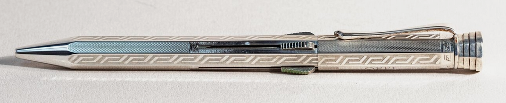

Fend Super-Norma
Der "vollautomatische" Vierfarbstift
Stand: 07.05.2026
Dies ist ein Unterartikel. Hier geht es zum Hauptartikel über Fend

Aufbauend auf dem Norma folgte 1936 mit dem von Kurt Fend erfundenen
Super Norma potentiell einer der größten Erfolge der Firmengeschichte: Die Sperrhülsenautomatik wurde erstmals in einem Mehrfarbstift zum einfachen Farbwechseln verbaut.
Sie erlaubte einen automatischen Rückzug des ausgefahrenen Minenträgers durch leichtes Herabschieben eines der anderen Schieber. Stifte mit einem solchen Mechanismus wurden häufig mit der Beschreibung "automatisch" oder "vollautomatisch" versehen.
In den zuvor erwähnten Verbreitungsländern des Norma zug nun auch der Super-Norma ein und verbreitete sich noch weiter.
In der Schweiz wurde der 'Dictator' passend zum Super-Dictator (angemeldet 1938 als Markennummer 93250).
In Frankreich wendete JIF mit dem Panta-Vierfarbkugelschreiber den Mechanismus an und in Italien beispielsweise Universal.
In Japan war es ein Stift der 'Kanoe Peace'-Reihe (die nicht nur aus Mehrfarbstiften bestand). Dieser wurde von Morita Metal (森田金属製作所) hergestellt, für den Belege der Nutzung der Fend-Patente existieren, Morita also Verbindung zu Fend aufgebaut haben müsste.
Auch Goldfink blieb Fend treu; Ein Goldfink Super-Norma war ein Geburtstagsgeschenk Adolf Hitlers an Friedrich Braun im Jahre 1944. Gerade in Anbetracht der angespannten Beziehung Hitlers und Brauns ist es bemerkenswert, dass ein Mehrfarbstift als ein gebührendes Geschenk gesehen wurde.
Verschiedene Fend-Stifte aus diesen Jahren, so auch manche Norma und Super-Norma, trugen synthetische Steine von I.G. Farben.
Mehr Inhalt folgt in Zukunft.